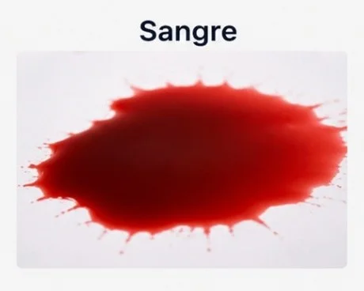
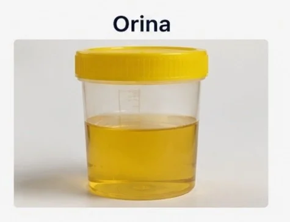
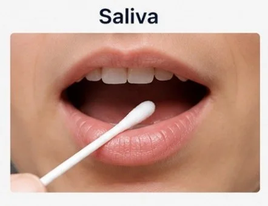
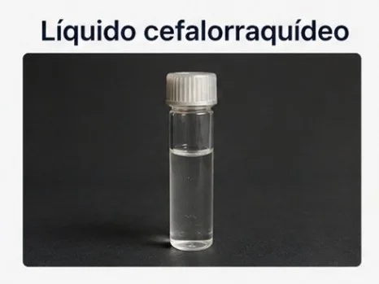
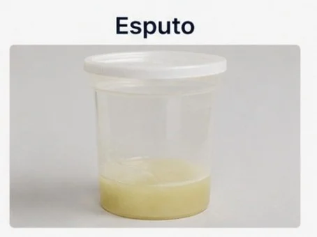
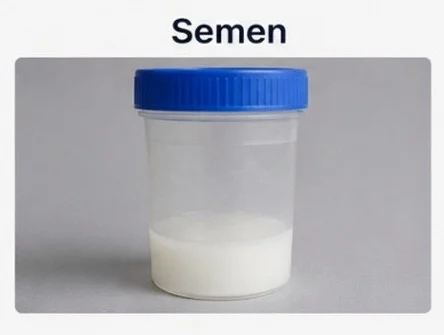
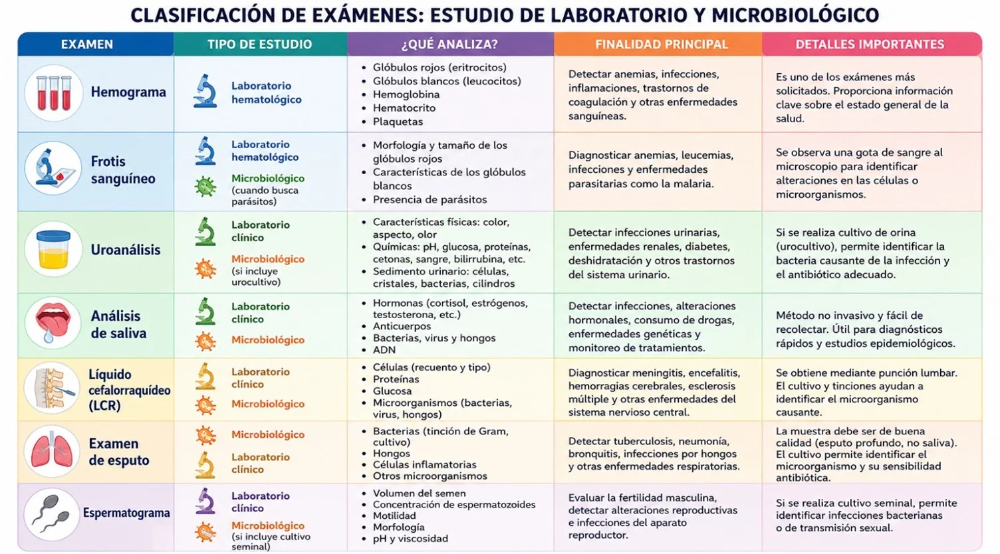

Análisis de fluidos biológicos
¿Qué son?
Los análisis de fluidos biológicos son pruebas de laboratorio que consisten en estudiar muestras de líquidos producidos por el organismo, como sangre, orina, saliva, líquido cefalorraquídeo y otros. Su objetivo es obtener información sobre el estado de salud del paciente, detectar enfermedades, identificar infecciones, evaluar el funcionamiento de órganos y ayudar al médico a establecer un diagnóstico preciso y un tratamiento adecuado. Estos análisis son fundamentales porque muchos cambios que ocurren en el cuerpo se reflejan en la composición de los fluidos biológicos, permitiendo detectar alteraciones incluso antes de que aparezcan síntomas evidentes.
Tipos de análisis
Algunos de los más comunes

Sangre
Hemograma, frotis sanguíneo.

Orina
Uroanálisis.

Saliva
Detección de infecciones y alteraciones hormonales.

Líquido cefalorraquídeo
Diagnóstico de meningitis y enfermedades neurológicas.

Esputo
Diagnóstico de infecciones respiratorias.

Semen
Evaluación de la fertilidad masculina.
Desglose de los exámenes
Sangre
Los exámenes de sangre, como el hemograma y el frotis sanguíneo, permiten evaluar los componentes sanguíneos. El hemograma mide la cantidad de glóbulos rojos, glóbulos blancos, hemoglobina y plaquetas, ayudando a detectar anemias, infecciones y otras alteraciones. El frotis sanguíneo consiste en observar una muestra de sangre al microscopio para analizar la forma y características de las células sanguíneas.
Orina
El uroanálisis estudia las características físicas, químicas y microscópicas de la orina. Este examen ayuda a identificar infecciones urinarias, enfermedades renales, diabetes, deshidratación y otros trastornos del organismo.
Saliva
El análisis de saliva permite detectar infecciones, alteraciones hormonales y algunas enfermedades mediante el estudio de hormonas, anticuerpos, microorganismos y otras sustancias presentes en la saliva.
Líquido cefalorraquídeo
El análisis del líquido cefalorraquídeo se realiza mediante una punción lumbar y sirve para diagnosticar enfermedades del sistema nervioso central, como meningitis, encefalitis, hemorragias cerebrales y trastornos neurológicos.
Esputo
El examen de esputo analiza la mucosidad expulsada por las vías respiratorias. Se utiliza para identificar infecciones pulmonares como tuberculosis, neumonía y bronquitis, además de otros problemas respiratorios.
Semen
El espermatograma estudia las características del semen, incluyendo la cantidad, movilidad y forma de los espermatozoides. Este examen es fundamental para evaluar la fertilidad masculina y detectar posibles alteraciones reproductivas.
Clasificación: estudio de laboratorio o microbiológico
Según lo que se busca analizar, cada examen puede clasificarse como un estudio de laboratorio (clínico o hematológico) o como un estudio microbiológico. Muchos pueden corresponder a ambos tipos según las pruebas adicionales que se realicen (por ejemplo, un cultivo).

Indicaciones antes, durante y después de los cultivos
- •Verificar la identidad del paciente.
- •Explicar el procedimiento y su finalidad.
- •Comprobar que la muestra se tome antes de iniciar tratamiento con antibióticos, cuando sea posible.
- •Realizar higiene de manos y preparar el material estéril necesario.
- •Identificar correctamente el recipiente donde se colocará la muestra.
- •Garantizar la privacidad y comodidad del paciente.
- •Mantener técnica aséptica para evitar la contaminación de la muestra.
- •Utilizar guantes y equipo de protección según corresponda.
- •Obtener la muestra del sitio indicado siguiendo el protocolo específico (sangre, orina, esputo, exudado, etc.).
- •Evitar tocar las zonas estériles del material.
- •Colocar la muestra inmediatamente en el recipiente adecuado y cerrarlo correctamente.
- •Etiquetar la muestra con nombre del paciente, fecha y hora de recolección.
- •Enviar la muestra al laboratorio lo más pronto posible.
- •Desechar correctamente el material utilizado según normas de bioseguridad.
- •Realizar higiene de manos.
- •Registrar en la historia clínica el procedimiento realizado y cualquier observación relevante.
- •Vigilar posibles molestias o complicaciones según el tipo de cultivo realizado.